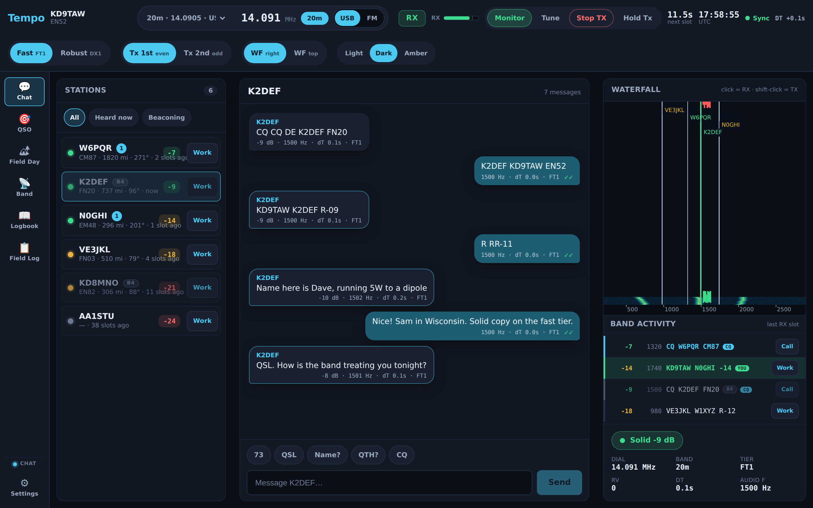

Conversation, not a slideshow
FT1's fast tier runs a 4-second over — roughly 4× quicker turnaround than the 15-second cycle behind FT8 and JS8. A keyboard QSO that actually flows back and forth.
A messenger, not a lab bench
A clean, chat-first window: people, threads, a live decode feed, one-tap controls, and three field themes including a night-vision Amber. The radio without the clutter.
Built from scratch
Not a reskin of an existing mode. Two purpose-built waveforms — a fast coherent tier (FT1) and a fading-robust tier (DX1) — engineered for resilient off-grid text, sharing standard messages.

Weak-signal text got powerful. It never got fast — or friendly.
Digital HF text today gives you two choices, and neither is a good conversation. FT8 is a brilliant beacon — a fixed, semi-automated exchange of callsigns and a signal report — but it isn't talking. JS8Call is built for real keyboard-to-keyboard chat, and it works — but it rides the same 15-second frame structure (with 10- and 6-second modes that want stronger signals), so a single back-and-forth can stretch past half a minute. You type, you send, you wait.
And almost all of it is wrapped in interfaces that feel like test equipment: dense, modal, knobs-and-grids tooling that assumes you already know the jargon.
Tempo's bet: weak-signal text should move at the speed of a conversation, and feel like an app you'd actually want to open.
A messenger on top, a real radio underneath.
Tempo is Nexus's modern, chat-first HF text layer for the off-grid / preparedness ham community. It looks and feels like a messaging app — presence, a live decode feed, a conversation thread — but it never hides the radio. Under that interface sit two purpose-built weak-signal waveforms and a one-tap toggle: FT1 (Fast) for conversation and DX1 (Robust) for reach. Both carry the same standard 77-bit messages, so Chat, auto-QSO, and Field Day work identically on either.
It's free and open source (GPL-3.0), authored by KD9TAW, who also designed the FT1 and DX1 waveforms.
Tempo doesn't replace WSJT-X or JS8Call — it's a different tool for a different job. It runs alongside your existing setup, aimed at fast conversational text and fading-resilient reach for off-grid work.
Two tiers, one conversation.
The core isn't the interface — it's the waveforms. Tempo gives you a two-tier system and lets you pick the right one for the path you're on, then keep talking. Both share the same 77-bit message and LDPC(174,91) error correction; only the modem and the clock change.
FT1 — built for conversation
- 4-second cycle (~3.5 s of waveform), ~150 Hz wide.
- Coherent 4-CPM modulation — wrings the most information out of every second of air time. That's the speed lever.
- Incremental-redundancy retransmission (IR-HARQ) — live and on by default. A failed frame is joint-turbo-combined with its RV1/RV2 resends, accumulating coding gain — unusual for amateur text modes. Measured ~+2.5 dB threshold shift and ~2× QSO completion in the −11…−13 dB zone (simulation-validated; not yet confirmed on the air).
DX1 — built to survive the path
- Non-coherent 8-FSK, ~50 Hz wide, 15-second cycle.
- Never relies on carrier phase, so it rides through fading that collapses coherent modes.
- In simulation it loses only ~3.7 dB under Rayleigh fading — where FT8-class coherent modes lose 10+ dB.
An honest trade: FT1 gives up roughly 3 dB of raw sensitivity versus FT8 (a simulated ~−15 dB threshold vs ~−18 to −21 dB) to buy that conversational cycle. You can't have one waveform that's both the fastest and the most sensitive — so Tempo ships both, and you choose.
| FT1 — Fast | DX1 — Robust | |
|---|---|---|
| Modulation | Coherent 4-CPM (h = 1/2, BT = 0.3) | Non-coherent 8-FSK (Gray-coded) |
| T/R cycle | 4 s (~3.5 s of waveform) | 15 s |
| Occupied bandwidth | ~150 Hz | ~50 Hz |
| Error correction | LDPC(174,91) + turbo equalization, live IR-HARQ | LDPC(174,91), soft-decision |
| Best for | Conversational pace on stable regional / national paths | Fading, disturbed, regional-to-national paths |
| Simulated AWGN threshold | ~−15 dB (simulation only) | ~−18.6 dB (simulation only) |
Both tiers carry the same 77-bit, WSJT-X-compatible messages — switching tiers changes the timing and waveform, never the message format or your workflow. The tier is never switched silently: the operator picks Fast or Robust, and the toggle stays visible.
Features at a glance.
◆Chat-first, ham-aware UI
A single window with a conversation thread, station presence, and a modernized waterfall. SNR, audio offset, dT, dial/band/sideband, mode/tier, and T/R timing stay visible. Three themes incl. night-vision Amber, plus an adaptive, resizable workspace.
◆Live decode feed
Color-coded by what matters: directed-to-you, worked-before (B4), CQ, new. Each row shows color-graded SNR, frequency, and message — with one-tap Call / Work buttons to start a directed QSO.
◆Three operating modes
Chat (presence, auto-chunked free text, directed inbox, store-and-forward), QSO (Run / Search-&-Pounce auto-sequencer), and Field Day (native exchange, dupe-checked log, ADIF/Cabrillo export). Contacts are operator-initiated by design.
◆Logbook + ecosystem interop
ADIF logbook with auto-logging and B4 highlighting; ADIF/Cabrillo export; the WSJT-X UDP API (double-click-to-call from GridTracker/JTAlert) and PSK Reporter spotting.
◆Rig control + clean band plan
Hamlib rigctld (bundled, offline), serial RTS/DTR, or VOX; a 56-model rig dropdown and one-tap band selector. Tempo's calling frequencies sit clear of the FT8/JS8/WSPR watering holes and CW segments.
◆Coordinated QSY ("Roam")
Opt-in "move together" that hops channels with the station you're working to dodge interference — announced in the clear. Honestly: it's legal anti-QRM + casual obscurity, not encryption or privacy. A capable listener can still follow.
◆Safe by default
Tempo starts passive (hunt-and-pounce): it listens and decodes but won't transmit until you act. The CQ beacon is opt-in and off by default; Monitor/Muted, Tune, and Stop TX give you instant control, with a transmit watchdog as backstop.
Good for real off-grid work.
…and why we need you.
We'd rather under-promise. Here's exactly where things stand:
- The app is feature-complete and runs on Windows. The installer is a ~199 MB per-user, unsigned, cross-compiled build that bundles WebView2 and Hamlib offline — no admin rights, no internet needed. Expect a SmartScreen warning ("More info → Run anyway"), as with any unsigned beta. macOS / Linux desktop builds are Phase 2.
- The waveforms are validated by simulation only — AWGN and Rayleigh-fading sweeps in the test harness. They have not yet been confirmed on the air. The simulated thresholds (FT1 ~−15 dB, DX1 ~−18.6 dB) are bench numbers, not field results.
- On-air decode-rate-vs-SNR validation is the #1 remaining gate — the single biggest reason the project needs operators.
- Shipped in v0.2.0 (beta): IR-HARQ joint-turbo soft-combining is now live end-to-end and on by default; DX1 full-passband acquisition now decodes every signal across 200–2900 Hz per slot (the tuned RX offset is now just a waterfall marker / TX-pairing hint). The Windows cross-build is validated — modem self-tests, tempo.exe, and the NSIS installer all cross-build clean, with 5/5 Windows test exes passing. Still simulation- and cross-build-validated only — not yet confirmed on the air.
- Known limits: the FT8/FT4 tier is Phase 2 (designed, not yet wired).
Become a tester.
This is an open invitation. If you have an HF station and a soundcard-mode workflow, you can move this project from "promising in simulation" to a real answer on the air.
You're a good fit if you
- Run Windows and a CAT- or VOX-controllable HF rig (Hamlib's 56-model dropdown, serial RTS/DTR, or VOX).
- Are comfortable with WSJT-X / JS8Call-style soundcard operating.
- Like being early, and don't mind a rough edge in exchange for shaping the result — including reporting the boring failures and the contacts that didn't decode.
What testers actually do
- Install and run it on your station — get on a Tempo calling frequency and start decoding.
- Report on-air decode rate vs. SNR — the headline data we need.
- Try a real exchange — a Chat QSO, an auto-sequenced QSO, or a Field Day exchange; tell us how the 4-second cadence feels.
- Test the rough edges — DX1 full-band acquisition, IR-HARQ rescues, Coordinated QSY, store-and-forward, rig control, audio.
Getting started is quick: grab the Windows installer, get on a Tempo calling frequency, and start decoding. The best feedback is a GitHub issue with your rig, band, observed SNR, and decode result — but an email works too.
If you've ever wished a weak-signal keyboard QSO moved at the speed of an actual conversation — get on the air and help us find out whether FT1 delivers.